Cauldron: Recipes Meals Macros
cauldron For iPhone, iPad and Mac. Alpha, through TestFlight.
Keep recipes, plan meals, track what you eat.
cauldron For iPhone, iPad and Mac. Alpha, through TestFlight.
Keep recipes, plan meals, track what you eat.
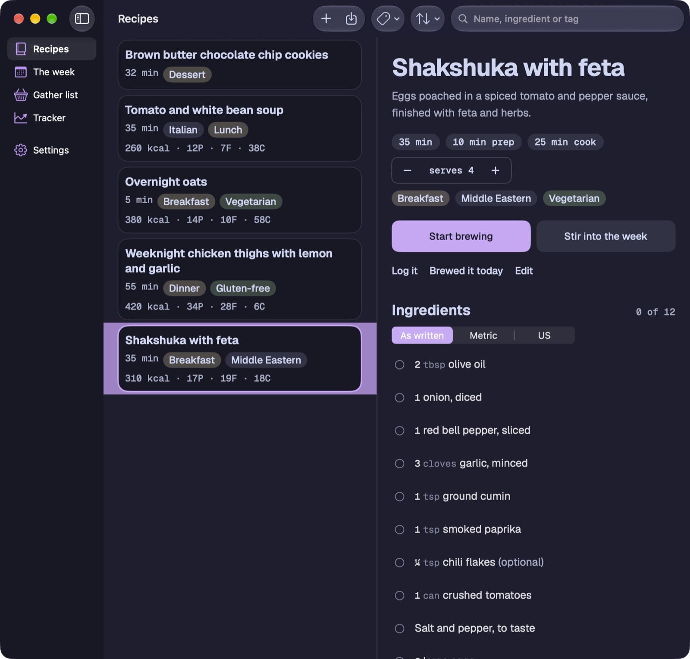
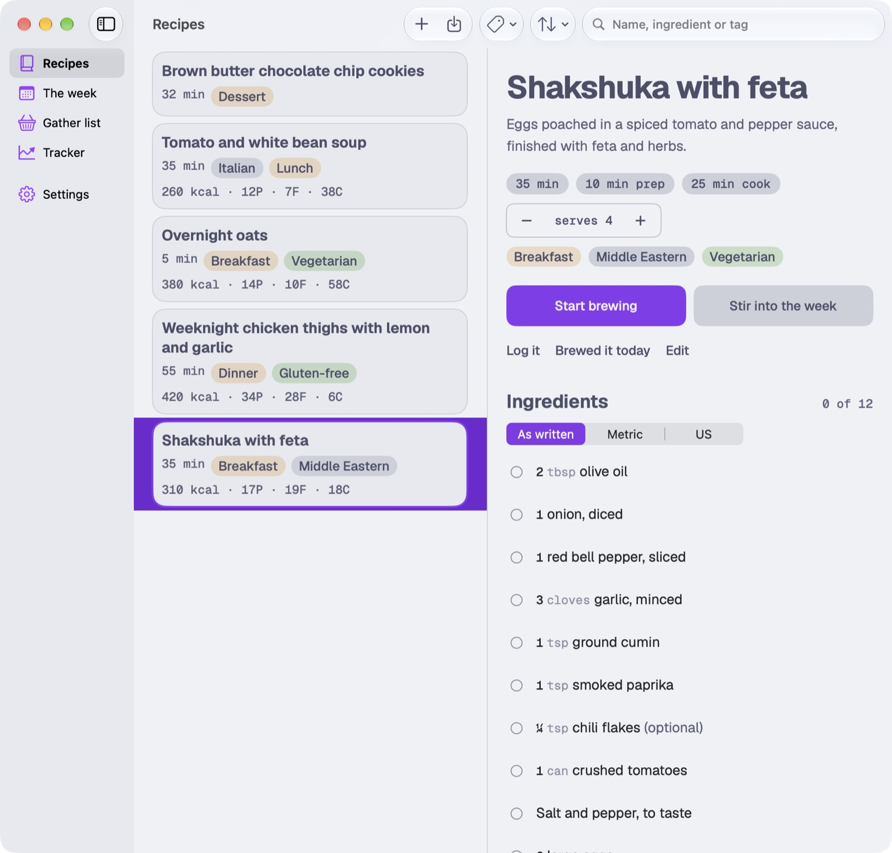
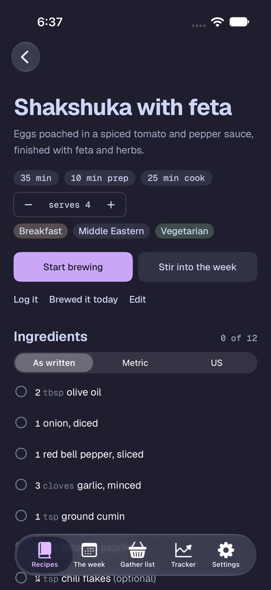
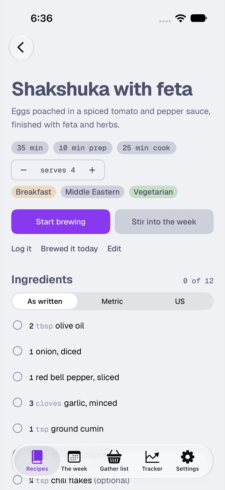
Cauldron is one native app for iPhone, iPad and Mac. A sidebar on the Mac, tabs on the phone, and the same recipes on both through your iCloud.
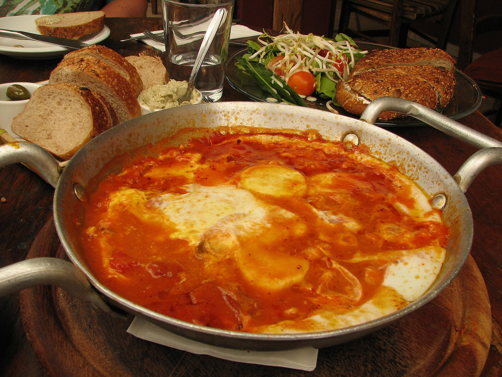
Every recipe in Cauldron is kept in parts: amount, unit, item and note. That’s what lets it scale, convert and add up a shopping list. Try the servings below.
Serves 4
1,240 kcal in the pan · 310 a serving
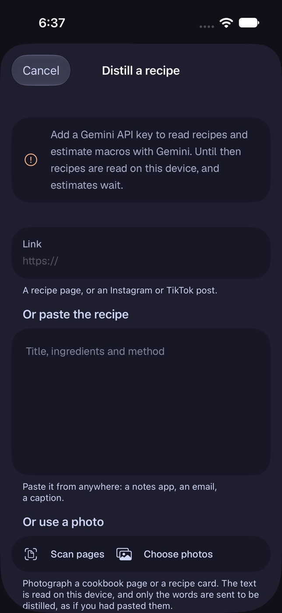
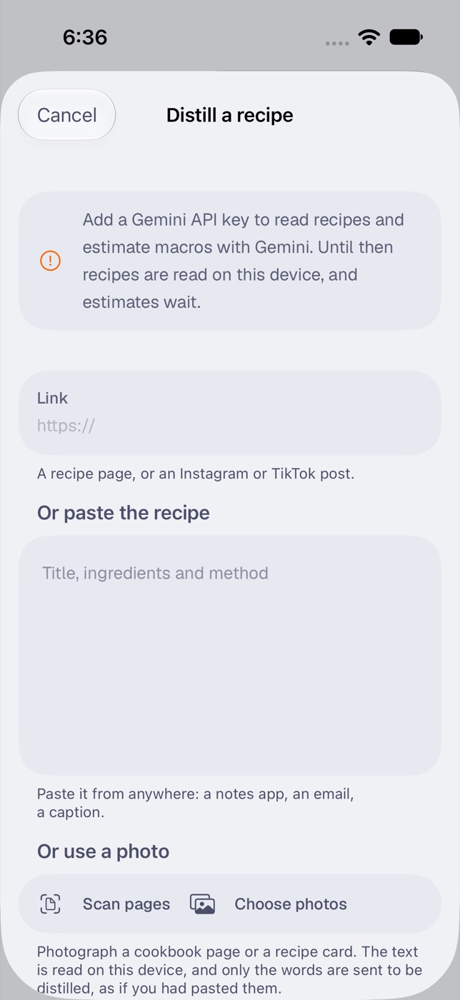
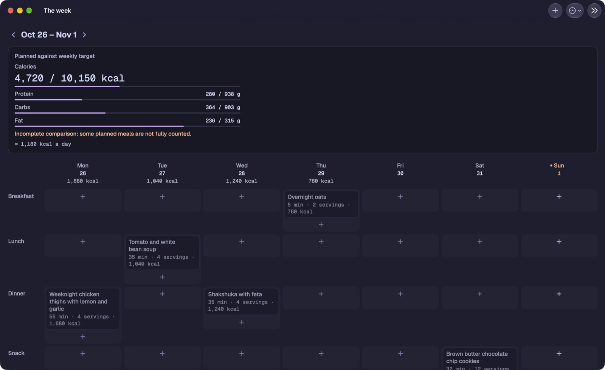
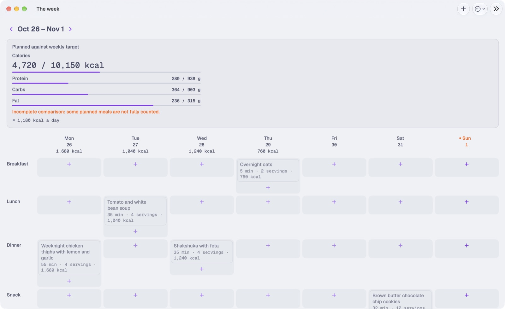
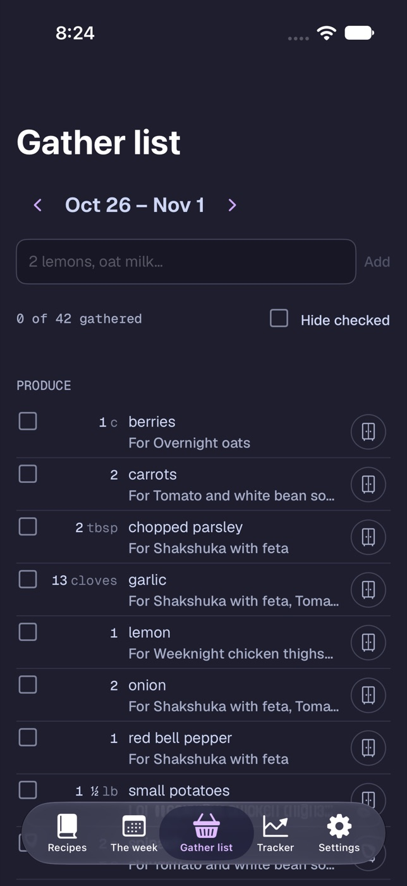
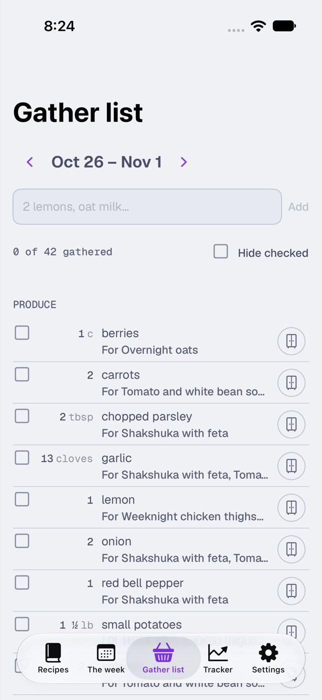
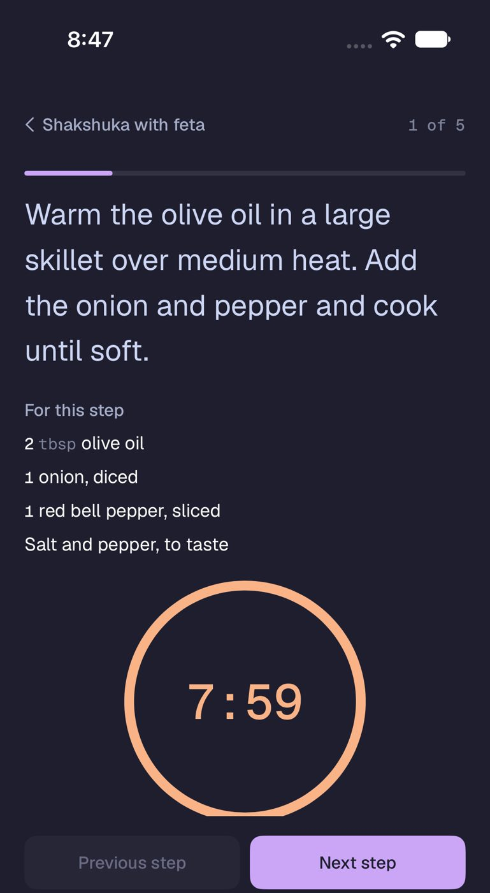
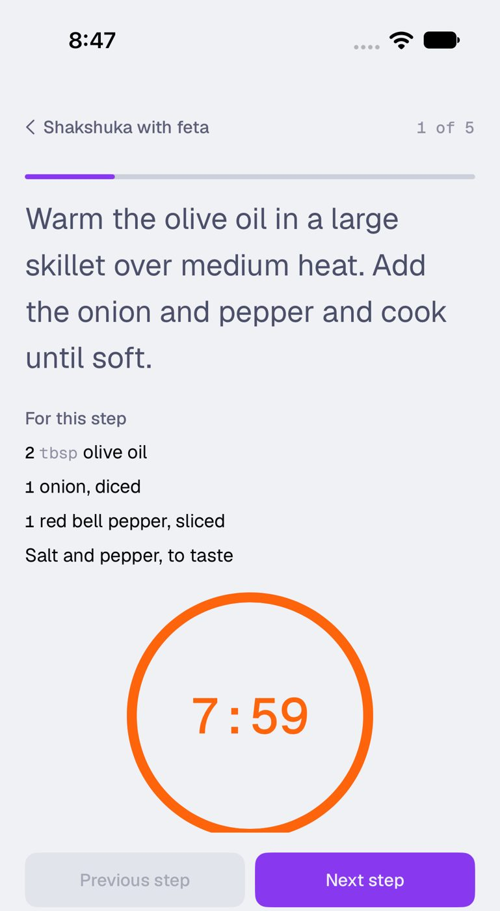
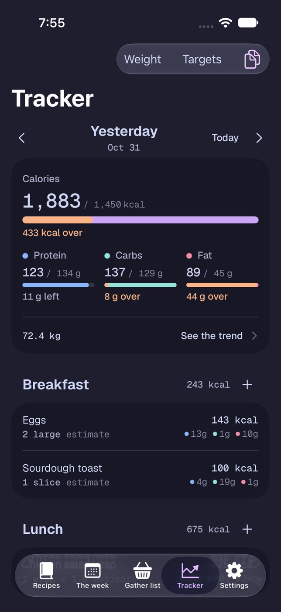
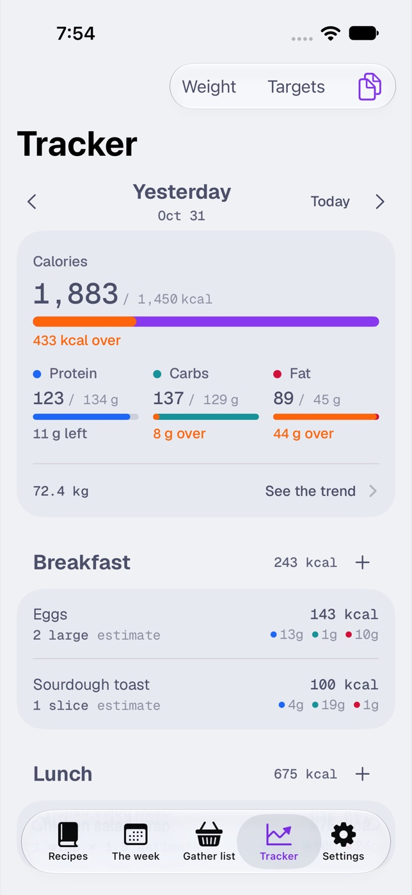
Paste a link, a recipe from a notes app, or a photo of a cookbook page. Cauldron reads it into a card like the one above.
From a link, text or photoabout a minute
Put it on Wednesday’s dinner. The week adds up what you’ve planned against your calorie and macro targets.
Four servings, Wednesday1,240 kcal
Every planned meal’s ingredients, added together and sorted by aisle. Mark what’s already in the pantry and it steps aside.
The whole week42 items
One step at a time, in type you can read from the stove, with each step’s timer ready to start. The screen stays on.
Five steps35 min
Log what you ate and its macros land in the day, against targets that adjust as your weight trend comes in.
One serving310 kcal
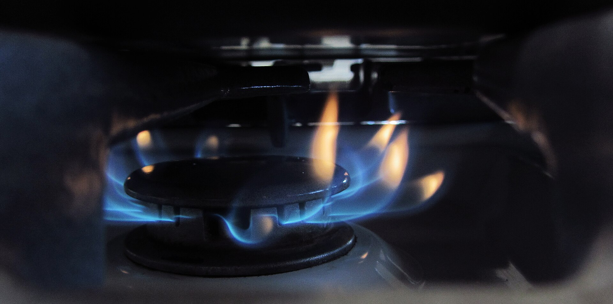
Tester places aren’t open yet. Watch the repository on GitHub and you’ll see the first TestFlight call. Needs iOS 27 or macOS 27.